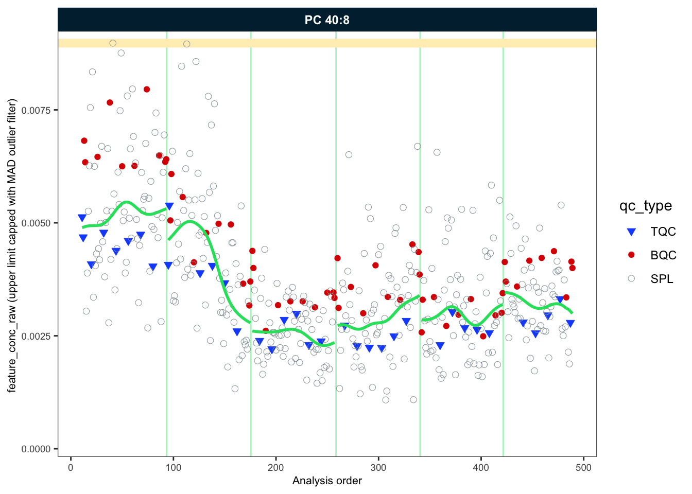
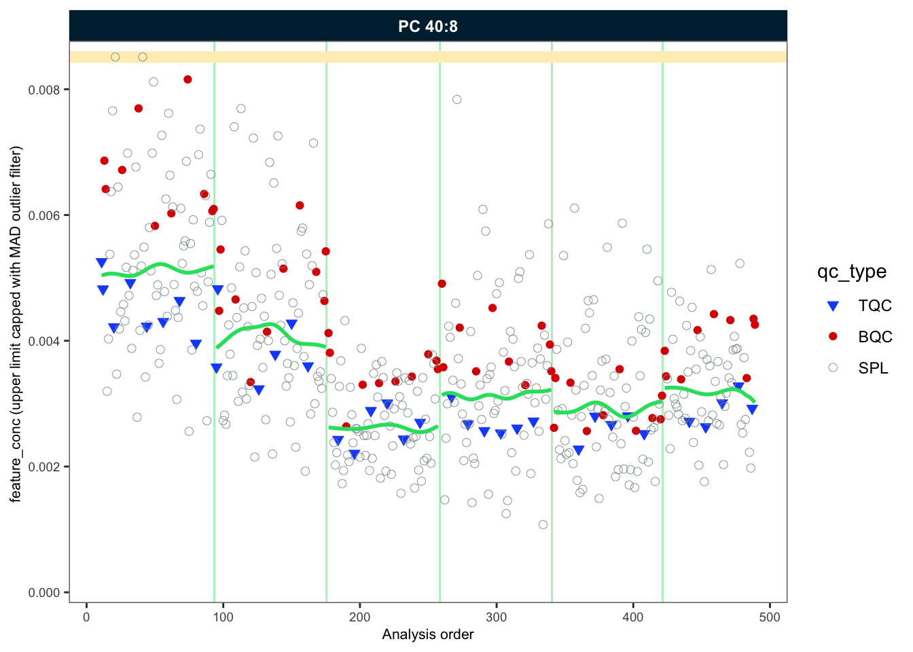

Importing MRMkit results with integrated peak areas
We import the peak areas obtained from peak integration using MRMkit in Part 1 of this workshop. This MRMkit result file contains the peak areas of integrated peaks (features) in all processed raw data file. In addition, the MRMkit result file reports peak retention times and widths, and metadata from the mzML files, i.e. the acquisition time-stamp and transition m/z values. We will import these metadata as well by setting use_metadata = TRUE.
ℹ `feature_area` selected as default raw feature intensity. Use `data_set_intensity_var()` to modify.
✔ Analysis metadata associated with 499 analyses.
✔ Feature metadata associated with 503 features.
A glimpse on the imported MRMkit results
Let’s have a look at the imported data be running code below or by running View(myexp@dataset_orig) in the console. As we can see, the data is in the long format, allowing use to view multiple parameters for each analysis-feature pair.
Explore the different columns and use filter function in the RStudio table viewer.
Code
print(myexp@dataset_orig) # TODO: Replace by actual getter
Having an overview of the analysis design and timelines can be helpful for the next processing steps. The plot below shows the batch structure, the QC samples included with their positions, and some information on date, duration and run time of the analysis in the title. Use show_timestamp = TRUE to show the analysis timestamps in the x axis. This can be helpful to see if there were interruptions during the analysis and when the different batches were analysed.
To have a first idea on how the analyses went, we can look at the Internal Standards in all samples across all 6 batches. Since the same ISTD amount was spiked into each sample (except SBLK) we should expect same intensities in all samples and sample types. What do you observe? You can set save_pdf to TRUE to have a pdf from the plots (which will be in the output folder).
For further processing we need additional metadata describing the samples and features. The MiDAR EXCEL template is an option to collect, organize and pre-validate analysis metadata. Open the XLSM file in the data folder to explore the metadata structure.
Using below function we import metadata from this template. In case of errors in the metadata (e.g. duplicate or missing ID), the import will fail with an error message. A summary of identified or potential issues in the metadata will be shown in a table. Work through these warnings to check your metadata, or ignore the warnings and proceed using ignore_warnings = TRUE.
! Metadata has following warnings and notifications:
---------------------------------------------------------------------------------
Type Table Issue Column Count
1 W Analyses Analyses not in analysis data NA 15
2 W Features Feature(s) not in analysis data NA 3
3 W ISTDs Internal standard(s) not used quant_istd_feature_id 1
---------------------------------------------------------------------------------
E = Error, W = Warning, N = Note
---------------------------------------------------------------------------------
✔ Analysis metadata associated with 499 analyses.
✔ Feature metadata associated with 503 features.
✔ Internal Standard metadata associated with 17 ISTDs.
✔ Response Curve metadata associated with 12 analyses.
Overall trends and possible technical outlier
To examine overall technical trends and issues affecting the majority of analytes (features), the RLA (Relative Log Abundance) plot can useful (De Livera et al, Analytical Chemistry, 2015). In this plot all feature is normalized (by the median across or within-batch) and the plotted as a boxplot per sample. This plot can to identify potential pipetting errors, sample spillage, injection volume changes or overall instrument sensitivity changes.
First run the code below as it is. What do you observe? Then have a look at batch 6 only uncommenting the line #analysis_no_range.. What does this tell us? Identify the potential … by setting x_axis_variable = "analysis_id". Set the y axis limits manually y_lim = c(-2,2) and show all analyses to see if there are other trends or fluctuations.
We classified a technical outlier and decide to remove it from all downstream processing, using data_exclude_analyses(). What do we now observe in the new PCA plot?
Code
# Exclude the sample from the processingmyexp <-data_exclude_analyses(myexp, analyses_exlude =c("Longit_batch6_51"), overwrite =TRUE)
ℹ 1 analyses were excluded for downstream processing. Please reprocess data.
As shown in the course presentation, we have a few cases where peaks were co-integrated with the interfering isotope peaks of other lipid species. We can subtract these intereferences from the raw intensities (areas) with below function, which uses information in the metadata.
Code
myexp <- midar::correct_interferences(myexp)
✔ Interference-correction has been applied to 11 of the 503 features.
Normalization and quantification based on ISTDs
Code
myexp <- midar::calc_normalize_by_istd(myexp)
✔ 461 features normalized with 17 ISTDs in 498 analyses.
Code
myexp <- midar::calc_quant_by_istd(myexp)
✔ 461 feature concentrations calculated based on 17 ISTDs and sample amounts of 498 analyses.
ℹ Concentrations are given in μmol/L.
Examine the effects of class-wide ISTD normalization
Class-specific ISTDs are common in lipidomics. However, normalization with internal standards can lead to artefacts and increase the data variability rather than reduce technical variability.
What do we observe below? What could be the reasons?
We will be using a Gaussian kernel smoothing based on the study sample to correct for within-batch drifts in the concentration data. The summary provided by this function is not meant to reflect real diagostics of the fit, but rather to understand if the fit caused any artefacts. Beside smoothing the trend, there is also an option to scale along the fit by setting scale_smooth = TRUE.
Code
myexp <- midar::correct_drift_gaussiankernel(data = myexp,qc_types =c("SPL"),batch_wise =TRUE,kernel_size =10,outlier_filter =TRUE,outlier_ksd =5,location_smooth =TRUE,scale_smooth =TRUE, show_progress =TRUE# set to FALSE when rendering)
✔ Drift correction (batch-wise) was applied to raw concentrations of 461 of 461 features.
ℹ The median CV of all features in study samples (batche medians) decreased by -1.7% (-3.7 to 0.3%) to 42.2%.
To illustrate the correction we will plot an example (PC 40:8) before after the drift and batch correction. Since we use the same plot several tomes, we first create a function wrapping the plot functionaly more easily.
Let’s use this before defined function to plot the trends of one selected example before and after within-batch smoothing. What do we observe?
Code
my_trend_plot("conc_raw", "PC 40:8")
Generating plots (1 page)...

- done!
Code
my_trend_plot("conc", "PC 40:8")
Generating plots (1 page)...

- done!
Batch-effect correction
As we observed the trend lines of the different batches are not aligned. We will use correct_batcheffects() to correct for median center (location) and scale differences between the batches. The define that the correction should be based on the study samples medians. An optinal scale correction can be performed by setting correct_scale = FALSE. After the correction we directly plot our example lipid species again. What do you observe now?
✔ Batch median-centering of 6 batches was applied to drift-corrected concentrations of all 461 features.
ℹ The median CV of features in the study samples across batches decreased by -0.5% (-2.7 to 1.7%) to 45.2%.
Code
my_trend_plot("conc", "PC 40:8")
Generating plots (1 page)...
- done!
Saving runscatter plots of all features as PDF
For further inspection and documentation we can save plots for species of interest. We do not plot Blanks are they can easily have random concentrations when signals of feature and ISTDs are near or below LOD. The plots are saved in the output folder. Have a look and feel free to adjust how many plots are saved per page by setting cols_page and rows_page. Use ?runscatter or press F2 on the function name to see all available options.
As the last step in the processing we now apply a set of filters to exclude features that do not meet the specific QC criteria. The function qc_apply_feature_filter() allows to set the filters based on the data and metadata, press TAB after the open bracket after the function name of use F1 or ?qc_apply_feature_filter to see available filter criteria. The function can be run multiple times to explore the effect of different filters. > Experiment with different filter set and filter criteria.
✔
New QC filter criteria were defined: 330 of 424 quantifier features meet QC criteria (excluding the 25 quantifier ISTD features).
Summary of the QC filtering
The plot belows provides an overview of the data quality and the feature filtering. The segments in green indicate the number of species that passed all previously defined qc filtering criteria. The rest are number of species that failed in the different filtering criteria. Note that criteria are hierarchically organized, i.e. feature is only classified as failing a criteria (e.g., CVA), when it has passed the hierarchically lower filters (e.g., S/B and LOD).
The following plot summarizes the feature filtering even more, depicting the total number of features that passed the filtering. Also here the classification is based on hierarchical application of filters, as mentioned before. The Venn diagram on the right shows the number of features that failed a particular filtering criteria.
Saving a report with data, metadata and processing details
With the function below we can save an EXCEL workbook with different sheets comprising raw and processed datasets, metadata and feature QC metrics. The report can be found in the output folder.
✔ Concentration values of 376 analyses and 330 features have been exported.
Sharing the MidarExperiment dataset
The myexp object can be saved as an RDS file and shared. RDS files serialized R variable/objects that can be opened in R even if midar is not installed. You use the imported MidarExperiment object for re-processing, plotting or inspection using the midar package. > Below we save our experiment to the disk and re-open it again under a different name and check the status. TODO: use midar helper function to load the RDS file, asserting that the class is a MidarExperiment object.
Processing status: Batch- and drift-corrected concentrations
── Annotated Raw Data ──
• Samples: 498
• Features: 503
── Metadata ──
• Sample annotation: ✔
• Feature annotation: ✔
• Internal standard annotation: ✔
• Response curve annotation: ✔
• Study samples annotation: ✖
── Processing Status ──
• Isotope corrected: ✔
• ISTD normalized: ✔
• ISTD quantitated: ✔
• Drift corrected: ✔
• Batch corrected: ✔
• Feature QC-filtered: ✔
── Exclusion of Analyses and Features ──
• One or more analyses manually excluded: ✔
More QC
Code for additional QC analyses will be added here before the start of the workshop.
Source Code
---title: "SLING Data Analysis Workshop"subtitle: "Part 2: Post-processing of integrated peak data"author: "Bo Burla"execute: echo: true eval: true include: trueformat: html: code-fold: true code-tools: true code-copy: true page-layout: full fig-align: 'center'editor: visual---```{r init}#| message: false#| include: false# Load R packageslibrary(midar)```## Importing MRMkit results with integrated peak areasWe import the peak areas obtained from peak integration using `MRMkit` in Part 1 of this workshop. This `MRMkit` result file contains the peak areas of integrated peaks (features) in all processed raw data file. In addition, the `MRMkit` result file reports peak retention times and widths, and metadata from the mzML files, i.e. the acquisition time-stamp and transition m/z values. We will import these metadata as well by setting `use_metadata = TRUE`.```{r load-rawdata}data_path <- "./data/sPerfect_MRMkit-20240911.tsv"metadata_path <- "./data/sPerfect_Metadata_MidarTemplate-20241001_All.xlsm"myexp <- midar::MidarExperiment(title = "sPerfect")myexp <- midar::data_import_mrmkit(myexp, path = data_path, use_metadata = TRUE)```## A glimpse on the imported MRMkit resultsLet's have a look at the imported data be running code below or by running `View(myexp@dataset_orig)` in the console. As we can see, the data is in the long format, allowing use to view multiple parameters for each analysis-feature pair.Explore the different columns and use filter function in the RStudio table viewer.```{r view-rawdata-}print(myexp@dataset_orig) # TODO: Replace by actual getter```## Analytical design and timelineHaving an overview of the analysis design and timelines can be helpful for the next processing steps. The plot below shows the batch structure, the QC samples included with their positions, and some information on date, duration and run time of the analysis in the title. Use `show_timestamp = TRUE` to show the analysis timestamps in the x axis. This can be helpful to see if there were interruptions during the analysis and when the different batches were analysed.```{r}qc_plot_runsequence( myexp, qc_types =NA, show_batches =TRUE, batches_as_shades =TRUE, batch_shading_color ="#fffbdb", segment_thickness =0.5,show_timestamp =FALSE)```## Signal trends of Internal StandardsTo have a first idea on how the analyses went, we can look at the Internal Standards in all samples across all 6 batches. Since the same ISTD amount was spiked into each sample (except SBLK) we should expect same intensities in all samples and sample types. What do you observe? You can set `save_pdf` to TRUE to have a pdf from the plots (which will be in the `output` folder).```{r}#| message: trueqc_plot_runscatter(data = myexp,variable ="intensity",qc_types =c("BQC", "TQC", "SPL", "PBLK", "SBLK"),analysis_no_range =NA, #get_batch_boundaries(myexp, c(1,6)), filt_include_features ="ISTD", filt_exclude_features ="Hex|282",cap_outliers =FALSE,log_scale =FALSE, show_batches =TRUE,base_font_size =5,save_pdf =FALSE,path ="./output/runscatter_istd.pdf",cols_page =3, rows_page =2)```## Adding detailed metadataFor further processing we need additional metadata describing the samples and features. The MiDAR EXCEL template is an option to collect, organize and pre-validate analysis metadata. Open the XLSM file in the `data` folder to explore the metadata structure.Using below function we import metadata from this template. In case of errors in the metadata (e.g. duplicate or missing ID), the import will fail with an error message. A summary of identified or potential issues in the metadata will be shown in a table. Work through these warnings to check your metadata, or ignore the warnings and proceed using `ignore_warnings = TRUE`.```{r}myexp <- midar::metadata_import_midarxlm(myexp, path = metadata_path, ignore_warnings =TRUE)```## Overall trends and possible technical outlierTo examine overall technical trends and issues affecting the majority of analytes (features), the RLA (Relative Log Abundance) plot can useful (De Livera et al, Analytical Chemistry, 2015). In this plot all feature is normalized (by the median across or within-batch) and the plotted as a boxplot per sample. This plot can to identify potential pipetting errors, sample spillage, injection volume changes or overall instrument sensitivity changes.> First run the code below as it is. What do you observe? Then have a look at batch 6 only uncommenting the line #analysis_no_range.. What does this tell us? Identify the potential ... by setting `x_axis_variable = "analysis_id"`. Set the y axis limits manually `y_lim = c(-2,2)` and show all analyses to see if there are other trends or fluctuations.```{r}midar::qc_plot_rla_boxplot(data = myexp,rla_type_batch =c("within"),variable ="intensity",qc_types =c("BQC", "SPL", "RQC", "TQC", "PBLK"), filter_data =FALSE, #analysis_no_range = get_batch_boundaries(myexp, batch_ids = c(6,6)), #y_lim = c(-3,3),x_axis_variable ="run_seq_num",ignore_outliers =FALSE, x_gridlines =FALSE,batches_as_shades =FALSE,linewidth =0.1)```## PCA plot of all QC typesThis is plot is an other way to obtain an overview of the study and QC samples and to identify potential issues in the data.| Explore other PCA dimension and try adding blanks (i.e. PBLK) to the plot, by adding `"PBLK"` to `qc_types` below.```{r}qc_plot_pca(data = myexp, variable ="feature_intensity", filter_data =FALSE,pca_dim =c(1,2),label_k_mad =3, qc_types =c("SPL", "BQC", "NIST", "TQC"),log_transform =TRUE, point_size =2, point_alpha =0.7, font_base_size =8, ellipse_alpha =0.3, remove_istds =TRUE)```## Exclude technical outliersWe classified a technical outlier and decide to remove it from all downstream processing, using `data_exclude_analyses()`. What do we now observe in the new PCA plot?```{r}# Exclude the sample from the processingmyexp <-data_exclude_analyses(myexp, analyses_exlude =c("Longit_batch6_51"), overwrite =TRUE)# Replot the PCAqc_plot_pca(data = myexp, variable ="feature_intensity", filter_data =FALSE,pca_dim =c(1,2),label_k_mad =3, qc_types =c("SPL", "BQC", "NIST", "TQC"),log_transform =TRUE, point_size =2, point_alpha =0.7, font_base_size =8, ellipse_alpha =0.3, remove_istds =TRUE, hide_label_text =NA)```## Response curves```{r}# Exclude very low abundant featuresmyexp <- midar::qc_apply_feature_filter(myexp, intensity.median.spl.min =200)qc_plot_responsecurves(data = myexp, variable ="intensity", filter_data =TRUE, feature_incl_filt ="PC 3[2-9]", save_pdf =FALSE, cols_page =5, )```## ## Isotope interference correctionAs shown in the course presentation, we have a few cases where peaks were co-integrated with the interfering isotope peaks of other lipid species. We can subtract these intereferences from the raw intensities (areas) with below function, which uses information in the metadata.```{r}myexp <- midar::correct_interferences(myexp)```## Normalization and quantification based on ISTDs```{r}myexp <- midar::calc_normalize_by_istd(myexp)myexp <- midar::calc_quant_by_istd(myexp)```## Examine the effects of class-wide ISTD normalizationClass-specific ISTDs are common in lipidomics. However, normalization with internal standards can lead to artefacts and increase the data variability rather than reduce technical variability.| What do we observe below? What could be the reasons?```{r}myexp <- midar::qc_apply_feature_filter(myexp, intensity.median.spl.min =1000, overwrite =FALSE)qc_plot_normalization_cv(data = myexp, filter_data =FALSE, qc_type ="SPL", var_before ="intensity", var_after ="norm_intensity")```## Drift correctionWe will be using a Gaussian kernel smoothing based on the study sample to correct for within-batch drifts in the concentration data. The summary provided by this function is not meant to reflect real diagostics of the fit, but rather to understand if the fit caused any artefacts. Beside smoothing the trend, there is also an option to scale along the fit by setting `scale_smooth = TRUE`.```{r}myexp <- midar::correct_drift_gaussiankernel(data = myexp,qc_types =c("SPL"),batch_wise =TRUE,kernel_size =10,outlier_filter =TRUE,outlier_ksd =5,location_smooth =TRUE,scale_smooth =TRUE, show_progress =TRUE# set to FALSE when rendering)```To illustrate the correction we will plot an example (PC 40:8) before after the drift and batch correction. Since we use the same plot several tomes, we first create a function wrapping the plot functionaly more easily.```{r}# Define a wrapper functionmy_trend_plot <-function(variable, feature){qc_plot_runscatter(data = myexp,variable = variable,qc_types =c("BQC", "TQC", "SPL"),filt_include_features = feature,filt_exclude_features ="ISTD",cap_outliers =TRUE,log_scale =FALSE,show_trend =TRUE,save_pdf =FALSE,path ="./output/runscatter_PC408_beforecorr.pdf",cols_page =1, rows_page =1, )}```Let's use this before defined function to plot the trends of one selected example before and after within-batch smoothing. What do we observe?```{r}my_trend_plot("conc_raw", "PC 40:8")my_trend_plot("conc", "PC 40:8")```## Batch-effect correctionAs we observed the trend lines of the different batches are not aligned. We will use `correct_batcheffects()` to correct for median center (location) and scale differences between the batches. The define that the correction should be based on the study samples medians. An optinal scale correction can be performed by setting `correct_scale = FALSE`. After the correction we directly plot our example lipid species again. What do you observe now?```{r}myexp <- midar::correct_batcheffects( myexp, qc_types ="SPL", overwrite = T,correct_location =TRUE, correct_scale =FALSE)my_trend_plot("conc", "PC 40:8")myexp <- midar::correct_batcheffects( myexp, qc_types ="SPL", overwrite = T,correct_location =TRUE, correct_scale =TRUE)my_trend_plot("conc", "PC 40:8")```## Saving *runscatter* plots of all features as PDFFor further inspection and documentation we can save plots for species of interest. We do not plot Blanks are they can easily have random concentrations when signals of feature and ISTDs are near or below LOD. The plots are saved in the `output` folder. Have a look and feel free to adjust how many plots are saved per page by setting `cols_page` and `rows_page`. Use `?runscatter` or press `F2` on the function name to see all available options.```{r}#| eval: falseqc_plot_runscatter(data = myexp,variable ="conc",qc_types =c("BQC", "TQC", "SPL"),filt_include_features =NA,filt_exclude_features ="ISTD",cap_outliers =TRUE,log_scale =FALSE,show_trend =TRUE,save_pdf =TRUE,path ="./output/runscatter_after-drift-batch-correction.pdf",cols_page =2, rows_page =2,show_progress =TRUE)```## QC-based feature filteringAs the last step in the processing we now apply a set of filters to exclude features that do not meet the specific QC criteria. The function `qc_apply_feature_filter()` allows to set the filters based on the data and metadata, press `TAB` after the open bracket after the function name of use `F1` or `?qc_apply_feature_filter` to see available filter criteria. The function can be run multiple times to explore the effect of different filters. \> Experiment with different filter set and filter criteria.```{r}myexp <-qc_apply_feature_filter(data = myexp,overwrite =TRUE,batch_medians =TRUE,qualifier.include =FALSE,istd.include =FALSE,response.curve.id =1,response.rsquare.min =0.8,response.yintersect.rel.max =0.6,signalblank.median.pblk.min =10,intensity.median.spl.min =100,#dratio.conc.tqc.mad.max = 0.5,cv.conc.bqc.max =25,features_to_keep =c("CE 20:4", "CE 22:5", "CE 22:6", "CE 16:0", "CE 18:0"))```## Summary of the QC filteringThe plot belows provides an overview of the data quality and the feature filtering. The segments in green indicate the number of species that passed all previously defined qc filtering criteria. The rest are number of species that failed in the different filtering criteria. Note that criteria are hierarchically organized, i.e. feature is only classified as failing a criteria (e.g., CVA), when it has passed the hierarchically lower filters (e.g., S/B and LOD).```{r}midar::qc_plot_summary_classes(myexp, include_qualifier =FALSE)```The following plot summarizes the feature filtering even more, depicting the total number of features that passed the filtering. Also here the classification is based on hierarchical application of filters, as mentioned before. The Venn diagram on the right shows the number of features that failed a particular filtering criteria.```{r}midar::qc_plot_summary(myexp, include_qualifier =FALSE)```## Saving a report with data, metadata and processing detailsWith the function below we can save an EXCEL workbook with different sheets comprising raw and processed datasets, metadata and feature QC metrics. The report can be found in the `output` folder.```{r}midar::report_write_xlsx(myexp, path ="./output/myexp-midar_report.xlsx")```Additionally, data can be saved as flat wide CSV file. Check the function arguments to select and subset the data.```{r}midar::report_write_csv(data = myexp, path ="./output/sperfect_filt_uM.csv",variable ="conc", qc_types ="SPL", include_qualifier =FALSE,filter_data =TRUE)```## Sharing the `MidarExperiment` datasetThe `myexp` object can be saved as an RDS file and shared. RDS files serialized R variable/objects that can be opened in R even if `midar` is not installed. You use the imported `MidarExperiment` object for re-processing, plotting or inspection using the `midar` package. \> Below we save our experiment to the disk and re-open it again under a different name and check the status. **TODO: use midar helper function to load the RDS file, asserting that the class is a `MidarExperiment` object.**```{r}saveRDS(myexp, file ="./output/myexp-midar.rds", compress =TRUE)my_saved_exp <-readRDS(file ="./output/myexp-midar.rds")print(myexp)```## More QCCode for additional QC analyses will be added here before the start of the workshop.